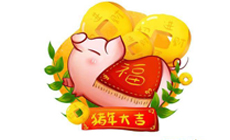
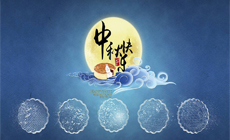
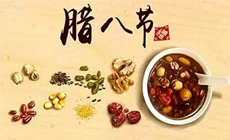
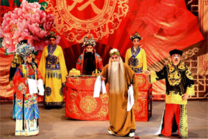
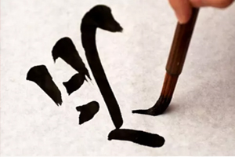
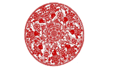
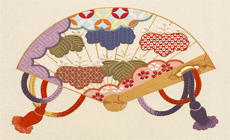
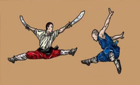
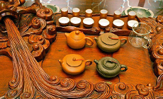

传统节日
- 
春节
-
端午节
- 
中秋节
- 
腊八节
中华诗词
酬中都小吏携斗酒双鱼于逆旅见赠 唐代：李白 鲁酒若琥珀，汶鱼紫锦鳞。 山东豪吏有俊气，手携此物赠远人。 意气相倾两相顾，斗酒双鱼表情素。 双鳃呀呷鳍鬣张，拨剌银盘欲飞去。 呼儿拂几霜刃挥，红肌花落白雪霏。 为君下箸一餐饱，醉著金鞍上马归。
中国戏剧
京剧，曾称平剧，中国五大戏曲剧种[1]之一，场景布置注重写意，腔调以西皮、 二黄为主，用胡琴和锣鼓等伴奏，被视为中国国粹，中国戏曲三鼎甲“榜首”。
徽剧是京剧的前身。清代乾隆五十五年（1790年）起，原在南方演出的三庆、四喜、春台、和春， 四大徽班陆续进入北京，他们与来自湖北的汉调艺人合作，同时又接受了昆曲、秦腔的部分剧目、 曲调和表演方法，吸收了一些地方民间曲调，通过不断的交流、融合，最终形成京剧。
汉字汉语
汉语是汉族人民使用的语言，汉字是书写这种语言的符号系统， 二者关系紧密而且是相适应的，汉字的创立，体现了中华民族的聪明才智， 是汉民族的智慧结晶。汉字是记录汉语的符号 ，是汉语的书面语工具 ， 汉字和汉语有着密切的联系。
先有汉语 ，后有汉字，汉字是在汉语基础上独立创建和发展起来的。
民间工艺
- 
剪纸
剪纸是中国民间传统的手工艺术，在我国流传已经有一千五百多年的历史。 剪纸是一种非常普及的民间艺术，千百年来深受人们的喜爱，是我国的艺术瑰宝，至今任然绽放着绚丽的光芒。 中国在西汉以及东汉时期就发明了造纸术，从那以后就有了剪纸艺术。剪纸是我国最普及、最具有群众基础的民间艺术， 具有浓厚的民族、民间艺术特色。
- 
刺绣
刺绣是在织物上刺制各种装饰图案的总称。 刺绣的主要织物是丝绸和丝线。刺绣是中国民间的传统手工艺术，至今已有两三千年的历史。 最为出名的是中国的四大名绣：江苏省的“苏绣”；湖南省的“湘绣”；广东省的“粤绣”； 四川省的“蜀绣”。在中国的传统刺绣工艺品中，常常把这四个省的刺绣合称为“中国四大名绣”。
- 
中国武术
中国武术即中国功夫，英文名：Kungfu。中国的传统武术，有着悠久的历史，最早可以追溯到商周时期。 功夫具有极其广泛的群众基础，是中国劳动人民在长期的社会实践中不断积累和丰富的一项宝贵的文化遗产。 武术往往要求把内在的”精“、“气”、“神”与外部的形体动作紧密结合在一起，完整一气，做到“心动行随”、 “形断意连”、“势断气连”。
- 
茶艺
家，中国是茶的故乡，中国是世界公认茶叶的祖国。茶，是中华民族的国饮。 饮茶、种茶、制茶都起源于中国。我国第一部药学专著《神农农本草经》 曾记载:“神农尝百草，日遇七十二毒，得茶而解之”。这说明，在距今7000年前的神农时代， 中国就发现了茶叶，并且知道了茶叶具有神奇的药用作用。 因此，我们中华民族的伟大始祖神农也成为了中国的茶叶鼻祖。 神农不仅是中国的茶叶鼻祖，同时，神农也是全世界的茶叶鼻祖。